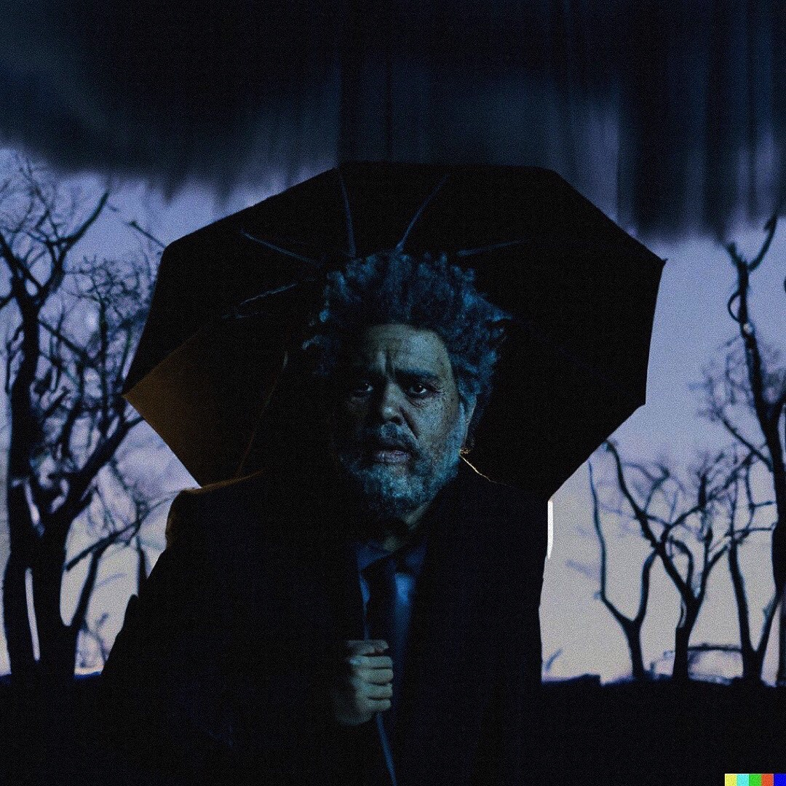

Jim Halpert
Daryl Philbin
Kelly Kapoor
Dwight Schrute
Andy Bernard
Michael Scott
Pam Beesly
Stanley Hudson
Artificially Authentic. This is a website that displays art that has been generated from AI Algorithms.
On this website, you will see AI generated art based on many different themes from Album covers to fashion created by AI.
All of the photos (including background images) have been created using AI.
Photos that have been used in the display have come from the Instagram page @ainterestingaf.
This chart shows that the use of AI has increased exponentially.
We can predict what the revenue would be after the year 2025. Please enter a year below that is after the year 2025
Below are some other examples of Uncropped Albums

Jim Halpert
Daryl Philbin
Kelly Kapoor
Dwight Schrute
Andy Bernard
Michael Scott
Pam Beesly
Stanley Hudson